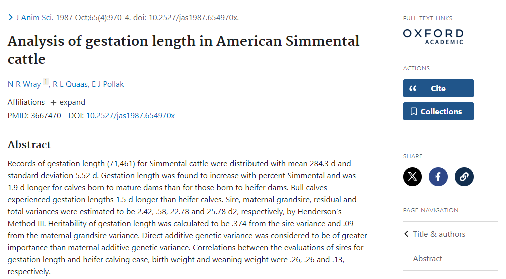
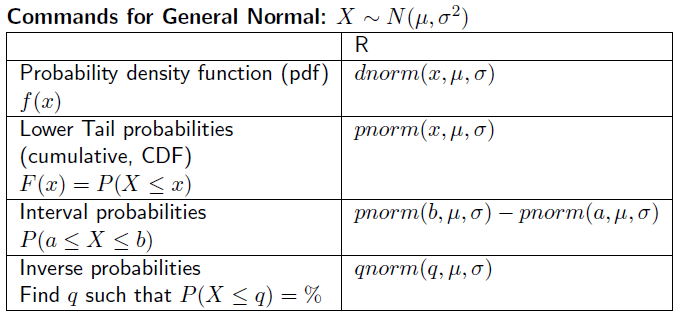

# Load the necessary libraries
library(infer); library(ggplot2)
# Create a sequence of values for the x-axis
x_values <- seq(-4, 4, by = 0.01)
# Create a data frame to hold these values
data_frame <- data.frame(x_values)
# Use ggplot to plot the standard normal curve
ggplot(data_frame, aes(x = x_values)) +
stat_function(fun = dnorm, args = list(mean = 0, sd = 1)) +
labs(title = "Standard Normal Curve", x = "Z-Score", y = "Density")Topic 4 – Normal and sampling distributions
ENVX1002 Introduction to Statistical Methods
Dr. Floris van Ogtrop
The University of Sydney
Jan 2024
Topic 4 Outline – Normal and sampling distributions
- Example
- Normal distribution
- Other continuous distributions
- Sampling distribution
Learning Outcomes
- Understand what a (probability) distribution is:
- the properties of a continuous distribution.
- Use Normal Distribution to understand/describe data
- Be able to standardise a Normal;
- Calculate probabilities based on Normal Distribution using R.
- Know that there are other continuous distributions useful in hypothesis testing.
- Distinguish between population, sample and sampling distributions;
- Distinguish between a standard deviation and standard error of the mean;
- Describe the Central Limit Theorem;
- Use R and Excel to calculate the standard error and probabilities associated with sampling distributions;
Types of data
- Numerical
- Continuous: yield, weight
- Discrete: weeds per m^2
- Categorical
- Binary: 2 mutually exclusive categories
- Ordinal: categories ranked in order
- Nominal: qualitative data
Example
- The gestation period (in days) for American Simmental cattle is distributed with mean 284.3 and standard deviation 5.52. How often is a calf born a week early?

What is a distribution
- In our case we are generally referring to a distribution function
- This is a function (or model) that describes the probability that a system will take on value or set of values {x}
- For any variable X, we describe probabilities by
- Discrete variables: probability distribution function P(X=x)
- Continuous variables: probability density function f(x)
- Discrete and Continuous variables: cumulative density function F(x) = P(X≤x)
Properties of a continuous distribution
- For any continuous distribution
- There is an infinite number of possible values;
- These values may be within a fixed interval. For example, male human heights (in cm) belong to [54.6,272].
- Specific values in a continuous distribution have probability 0. For example, the likelihood of measuring a Simmental cow at exactly 450kg is zero. This is because there are potentially an infinite number of other weights that are higher or lower than 450 kg so we say that measuring exactly 450 has a very very small probability which is equivalent to zero
- The total of all the probabilities = must be 1. (Total area under the pdf)
The Normal Distribution
- The Normal Distribution is super important because it occurs everywhere! It naturally describes many natural phenomenon and is a great for modelling the sample mean.
- It is a symmetric bell-shaped variable with two parameters \mu and \sigma^2 such that:
X\sim{N(\mu,\sigma^2)}
The Standard Normal Curve
- The standard normal curve is one where the mean = 0, and variance = 1
X\sim{N(\mu=0,\sigma^2=1)}
The General Normal Curve
- Simmental cattle gestation times…
# Define the mean and standard deviation
mean <- 284.3
sd <- 5.52
# Create a sequence of x values
x_values <- seq(mean - 4*sd, mean + 4*sd, length.out = 1000)
# Create a ggplot
ggplot(data.frame(x_values), aes(x = x_values)) +
stat_function(fun = dnorm, args = list(mean = mean, sd = sd)) +
labs(title = "Normal Distribution Curve", x = "Gestation Period (days)", y = "Density") +
theme_minimal()The General Normal Distribution
If X\sim{N(\mu,\sigma^2)}
f(x | \mu, \sigma) = \frac{1}{\sigma\sqrt{2\pi}} e^{-\frac{1}{2}\left(\frac{x - \mu}{\sigma}\right)^2} for x \in (-\infty,\infty)
- CDF
F(x)=P(X\le x)=\int_{-\infty}^x f(y)dy
Types of Normal Probabilitites
- There are 3 type of probabilities that we are interested in:
- Tail probabilities (lower and upper) = Cumulative probabilities
- Interval probabilities;
- Inverse probabilities.
Normal distribution in R
Types of Normal Probabilities
Lower: P(X\le 275)
# Load the ggplot2 library
library(ggplot2)
# Define the mean and standard deviation
mean <- 284.3
sd <- 5.52
# Define the x-value up to which the area should be shaded
x_shade <- 275
# Create a data frame for the x-values
x_values <- seq(mean - 4*sd, mean + 4*sd, length.out = 1000)
df <- data.frame(x = x_values)
# Create the ggplot object
p <- ggplot(df, aes(x)) +
stat_function(fun = dnorm, args = list(mean = mean, sd = sd), colour = "blue") +
geom_area(stat = "function", fun = dnorm, args = list(mean = mean, sd = sd),
xlim = c(min(x_values), x_shade), fill = "blue", alpha = 0.2) +
labs(title = "Normal Distribution", x = "Gestation Period (days)", y = "Density") +
theme_minimal()Types of Normal Probabilities
Upper: P(X\ge 290)
# Load the ggplot2 library
library(ggplot2)
# Define the mean and standard deviation
mean <- 284.3
sd <- 5.52
# Define the x-value up to which the area should be shaded
x_shade <- 290
# Create a data frame for the x-values
x_values <- seq(mean - 4*sd, mean + 4*sd, length.out = 1000)
df <- data.frame(x = x_values)
# Create the ggplot object
p <- ggplot(df, aes(x)) +
stat_function(fun = dnorm, args = list(mean = mean, sd = sd), colour = "blue") +
geom_area(stat = "function", fun = dnorm, args = list(mean = mean, sd = sd),
xlim = c(max(x_values), x_shade), fill = "blue", alpha = 0.2) +
labs(title = "Normal Distribution", x = "Gestation Period (days)", y = "Density") +
theme_minimal()Types of Normal Probabilities
Interval: P(280\le X\le 285)
# Load the ggplot2 library
library(ggplot2)
# Define the mean and standard deviation
mean <- 284.3
sd <- 5.52
# Define the range for the shaded area
lower_bound <- 280
upper_bound <- 285
# Create a data frame for the x values
x_values <- seq(mean - 4*sd, mean + 4*sd, length.out = 1000)
df <- data.frame(x = x_values)
# Create the ggplot object
p <- ggplot(df, aes(x)) +
stat_function(fun = dnorm, args = list(mean = mean, sd = sd), colour = "blue") +
geom_area(stat = "function", fun = dnorm, args = list(mean = mean, sd = sd),
xlim = c(lower_bound, upper_bound), fill = "blue", alpha = 0.2) +
labs(title = "Normal Distribution with Shaded Area", x = "Value", y = "Density") +
theme_minimal()Types of Normal Probabilities
Inverse: if we know the shaded area = 0.9 (90%), what is x?
P(X \le x)=0.9
Example
- Let’s return to our example for American Simmental cattle where X~N(284.3, 5.522),
- What is the probability of a gestation time less than 275 days.
So we need to calculate the lower Tail probability such that: P(X \le 275)
- One would expect around 5% of gestation times would be less than 275 days/
- Question for you: Why might this be important, how can we use these results??
Back to the Standard Normal Curve
- Sometimes it is useful to standardise “data” as it allows us to compare samples that are drawn from populations that may have different means and standard deviations
- Luckily for us we can standardise any general normal distribution X\sim{N(\mu,\sigma^2)} to a standard normal distribution X\sim{N(0,1)}
- This was also useful as we could use a set of standard normal tables to calculate probabilities (before computers were readily available).
P(X \le x)=P\left(\frac{X-\mu}{\sigma},\frac{x-\mu}{\sigma}\right)=P\left(Z \le \frac{x-\mu}{\sigma}\right)
Standard Normal Curve
- Example: if X\sim{N(10,9)} find P(X \le 14)
P(X \le x)=P\left(\frac{X-\mu}{\sigma},\frac{x-\mu}{\sigma}\right)=P\left(Z \le \frac{x-\mu}{\sigma}\right)
P(X \le 14)=P\left(\frac{X-10}{\sqrt9},\frac{14-10}{\sqrt9}\right)=P\left(Z \le \frac{4}{3}\right)
Percentiles of the Standard Normal Curve

Percentiles of the Standard Normal Curve

Percentiles of the Standard Normal Curve

Not so Normal Distributions
- Student T: The Student T distribution models a symmetric bell-shaped variable with thicker tails than a Normal.
- We say the variable X \sim t_n, with n degrees of freedom.
- It has an extra parameter = n which is related to population size
- The T distribution is used for the 1 and 2 sample T-tests which are really important in the next few weeks.

Not so Normal Distributions
- The Chi-Squared distribution models a variable which can only take positive values and is skewed in distribution.
- We say the variable X \sim \chi_n^2, with n degrees of freedom.
- The Chi-Squared distribution is used for the Chi-Squared Test which you will cover in the next few weeks.

Sampling distributions
- Rye grass root growth (in mg dry weight) follows the distribution X \sim N(300, 502).
- One measurement is taken: how likely is it that the dry weight exceeds 320 mg?
- 10 measurements are taken: how likely is it that the sample mean exceeds 320 mg?

Sampling distributions
- Here, we are dealing with 2 distributions:
- Measurement: X \sim N(300,50^2)
- Sample Mean of 10 measurements: \overline X = \frac{1}{10}\Sigma_{i=1}^{10} X_i \sim ...
How does the sampling distribution occur?
- http://onlinestatbook.com/stat_sim/sampling_dist/
- We have a population X
- We take a sample of size n and we calculate the mean \overline x_1
- We take another sample of size n and we calculate the mean \overline x_2
- We take another sample of size n and we calculate the mean \overline x_3 … If we sample all possibilities, then the sampling distribution of \overline X = \frac{1}{10}\Sigma_{i=1}^{10} X_i is the distribution of \{\overline x_1, \overline x_2, \overline x_3,...\}
Distribution for a sample mean
- if X\sim{N(\mu,\sigma^2)}
- then \overline X\sim{N(\mu,\frac{\sigma^2}{n})}
- Note that we call
- \sigma the standard deviation such that sd(X)=\sigma, and
- \sigma/\sqrt n the standard error such that sd(\overline X)=\sigma/\sqrt n
- The standard error is important for making inference on a sample populations i.e. how close your sample mean \overline x is to the population mean \mu
Example
- Rye grass root growth (in mg dry weight) follows the distribution X \sim N(300,50^2).
- One measurement is taken: how likely is it that the dry weight exceeds 320 mg?
- 10 measurements are taken: how likely is it that the sample mean exceeds 320 mg?
Example
- X = Rye grass root growth \sim N(300,50^2)
P(X>320) = P\left(\frac{X-\mu}{\sigma},\frac{x-\mu}{\sigma}\right)=P\left(\frac{X-300}{50}>\frac{320-300}{50}\right) =P(Z > 0.4) =1-P(Z < 0.4) \approx 1-0.66 = 0.34
Example
- \overline X = Rye grass root growth \sim N(300,\frac{50^2}{10})
P(\overline X>320) = P\left(\frac{\overline X-\mu}{\frac{\sigma}{\sqrt{n}}},\frac{x-\mu}{\frac{\sigma}{\sqrt{n}}}\right)=P\left(\frac{\overline X-300}{\frac{50}{\sqrt{10}}}>\frac{320-300}{\frac{50}{\sqrt{10}}}\right) =P(Z > 1.26) =1-P(Z < 1.26) \approx 1-0.90 = 0.10
Central limit theorem
- what about if we sample from any old population such that X\sim{??(\mu,\sigma^2)}?
- The it follows that X\approx{N(\mu,\sigma^2)}) and this is as a result of the Central Limit Theorem
- The CLT is the most important result in this course, and in much of statistical theory.
- The CLT requires few assumptions:
- We must have a `big enough’ sample size n;
- We must have finite variance \sigma^2<\infty What is a `big enough’ sample size? Some textbooks give a rule of thumb (eg n > 25 or n > 30), but it all depends on the type of distribution. If X is reasonably symmetric, then n could be small; if X is highly asymmetric, then n could be larger.
Central limit theorem
- We can demonstrate this in R (you will do it in the practical)
# Set parameters
set.seed(123)
number_of_samples <- 1000
sample_sizes <- c(5, 10, 30, 50)
distributions <- list(
"Normal" = rnorm,
"Exponential" = rexp,
"Chi-Squared (df = 2)" = function(n) rchisq(n, df = 2)
)
# Function to generate sample means from different distributions
generate_sample_means <- function(sample_size, number_of_samples, dist_function) {
sapply(1:number_of_samples, function(x) mean(dist_function(sample_size)))
}
# Generate sample means for different sample sizes and distributions
sample_means_list <- lapply(distributions, function(dist_function) {
lapply(sample_sizes, generate_sample_means, number_of_samples = number_of_samples, dist_function = dist_function)
})
# Convert to data frame for plotting
sample_means_df <- do.call(rbind, lapply(names(distributions), function(dist_name) {
do.call(rbind, lapply(1:length(sample_sizes), function(i) {
data.frame(
Distribution = dist_name,
Sample_Size = sample_sizes[i],
Sample_Mean = sample_means_list[[dist_name]][[i]]
)
}))
}))
names(sample_means_df) <- c("Distribution", "Sample Size", "Sample Mean")Central limit theorem
# Plot
ggplot(sample_means_df, aes(x = `Sample Mean`, fill = as.factor(`Sample Size`))) +
geom_histogram(position = "identity", alpha = 0.6, bins = 30) +
facet_grid(Distribution ~ `Sample Size`) +
theme_minimal() +
labs(title = "Central Limit Theorem Across Different Distributions",
subtitle = "Distribution of Sample Means for Different Sample Sizes and Distributions",
x = "Sample Mean", y = "Frequency", fill = "Sample Size")Thanks!
This presentation is based on the SOLES Quarto reveal.js template and is licensed under a Creative Commons Attribution 4.0 International License.
title: “ENVX1002-2024-Lecture-Topic04” format: revealjs editor: visual